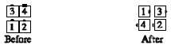

From tandem couples, box circulate, and some T-bone boxes (there are usually 2 leads and 2 trailers): All 1/4 In, and the original lead dancers Pass Thru (on the diagonal, if necessary) to form a right-hand mini-wave with the others. The original trailers slide sideways if necessary. Finishes in a right-hand mini-wave, except for some T-bone boxes.

© Copyright 1983, 1986-1988, 1995-2011 Bill Davis, John Sybalsky and CALLERLAB Inc., The International Association of Square Dance Callers. Permission to reprint, republish, and create derivative works without royalty is hereby granted, provided this notice appears. Publication on the Internet of derivative works without royalty is hereby granted provided this notice appears. Permission to quote parts or all of this document without royalty is hereby granted, provided this notice is included. Information contained herein shall not be changed nor revised in any derivation or publication.